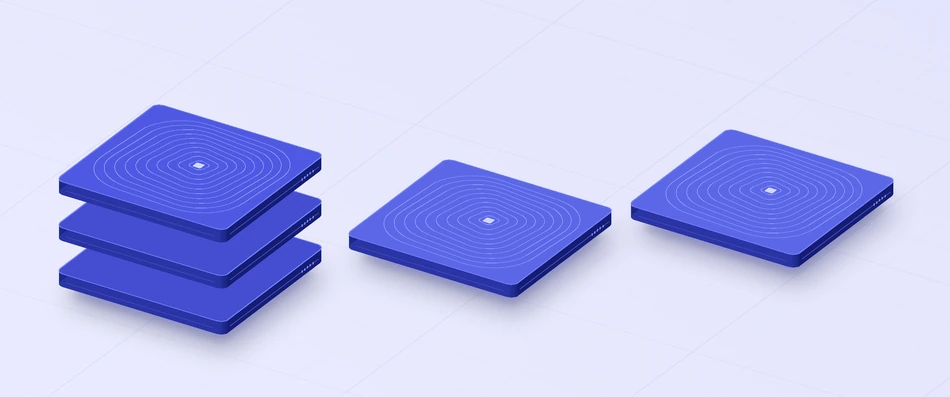

Kaaran

Which block needs the most attention?
Pandharpur has three flagged clusters in the district sample.
Inspect 3 clusters
Bhalwad Khurd Kendra
The mathematics score fell 11.6 points more than elsewhere in the block.
Applied AI
A Marathi and English data analyst co-built for education officers during the Anthropic × ShikshaNext hackathon.
Engineering case study
Claude interprets questions and prepares language. DuckDB and pandas compute the figures. A verifier checks the generated brief before it reaches the officer.
On 25 test questions, the LLM parser reached 92% intent accuracy. All 22 evaluated briefs passed verification on the first attempt. The project includes 295 automated tests.
The system provides web, WhatsApp and voice interfaces, plus downloadable evidence briefs. Its district demonstration uses synthetic data.

Pandharpur has three flagged clusters in the district sample.
The mathematics score fell 11.6 points more than elsewhere in the block.